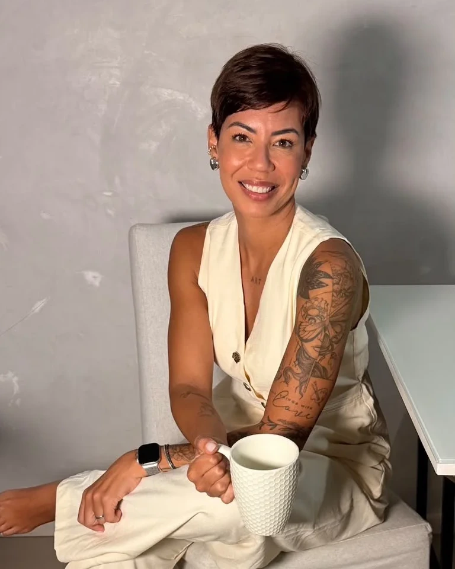

Reunião de planejamento
Nossa primeira etapa de conexão. O momento ideal para eu conhecer de perto sua personalidade, seus desejos e alinhar todas as inspirações para o casamento, trazendo segurança desde o primeiro contato.
Maquiagem e penteado de alta durabilidade para noivas, debutantes, shooting, produções sociais e audiovisual pelo mundo. Uma experiência de cuidado sob medida para o seu grande dia.
Iniciar Atendimento

Atuando no mercado de alta beleza desde 2015, trago na minha bagagem uma trajetória sólida construída na televisão, onde integrei por mais de 5 anos a equipe de caracterização oficial do canal Fox Sports.
"Maquiar é sobre cuidar, acolher e ressaltar a essência de cada mulher, gerando profundo bem-estar."
Com formação internacional na prestigiada escola Make Up For Ever em Nova York, especializei-me em técnicas de alta durabilidade, estudando com os maiores nomes do mercado.
Equipe oficial de maquiagem para TV ao vivo.
Make Up For Ever Academy em Nova York.
Técnica resistente a lágrimas, calor e suor.
Dedicação integral a apenas um evento por dia.
Um processo consultivo e tranquilo desenhado para eliminar qualquer correria.
Nossa primeira etapa de conexão. O momento ideal para eu conhecer de perto sua personalidade, seus desejos e alinhar todas as inspirações para o casamento, trazendo segurança desde o primeiro contato.
Realizada de um mês a dez dias antes do grande dia, a prévia é o momento de experimentar e alinhar cada detalhe da sua produção. Testaremos cuidadosamente o cabelo e a maquiagem escolhidos, garantindo que tudo esteja em perfeita harmonia com o seu estilo, sua personalidade e o visual que você sempre sonhou.
Uma produção exclusiva, sem pressa. Uso de materiais importados e hipoalergênicos à prova d'água, com assessoria completa na colocação do véu, grinalda e vestido, além de suporte técnico para as fotos do making of.
Serviços executados com produtos de altíssimo padrão internacional.
Pacotes exclusivos (Master, Diamond e Gold) com total exclusividade de data. Atendimento focado em tranquilidade e assessoria integral até a abertura da pista.
Produções completas para festas de 15 anos. Inclui prévia, assessoria técnica na colocação de acessórios e acompanhamento para troca de looks durante o evento.
Maquiagem social refinada e penteados sob medida para madrinhas, formandas e convidadas especiais. Beleza duradoura com sofisticação técnica.
Produção de beleza de alta durabilidade e acabamento impecável para ensaios fotográficos, campanhas de moda, editoriais e posicionamento profissional de imagem.
Acompanhamento de imagem e beleza no set com captação de making of de alta qualidade, reels e conteúdos dinâmicos prontos para as suas redes sociais.
Resultados e transformações reais de nossas clientes premium.


Experiências reais compartilhadas por clientes no Google Business.
"Simplesmente amei minha maquiagem! Ficou linda, natural e durou o evento inteiro. Além do talento, é uma profissional muito atenciosa, cuidadosa e pontual. Me senti super confiante e ainda mais bonita. Super recomendo!"
"A Sue é uma profissional maravilhosa! Além de ter técnica e fazer produções lindíssimas, ela é extremamente atenciosa e faz muito mais do que uma produção de beleza, faz a gente se sentir bem durante todo o processo. Suporte admirável!"
"Fiz maquiagem e cabelo com ela e o resultado ficou incrível! Acabamento lindo e natural, nada carregado. A make durou a noite inteira intacta e os produtos eram todos de ótima qualidade, meu cabelo ficou modelado até o dia seguinte!"
"Sue é uma profissional e pessoa que faz tudo com excelência! Confio de olhos fechados, sou sempre muito bem recebida e ouvida. Só de falar ela já sabe o que quero, e reproduz ainda melhor que imagino. Entrega o melhor trabalho!"
"Já faço make e cabelo com a Sue há alguns anos. Para todo tipo de evento, casamentos e formaturas. Muito profissional e comprometida. Todos os produtos que utiliza são da melhor qualidade, além da durabilidade excelente!"
"A Sue é maravilhosa e atenta aos nossos desejos. Eu tinha receio de ficar com o rosto cinza e ela me deixou com a pele perfeita, bem de acordo com a minha tonalidade. Recomendo de olhos fechados, principalmente para peles pretas!"
Tudo o que você precisa saber para planejar sua produção com total tranquilidade e segurança.
Recomendamos agendar com 6 a 12 meses de antecedência. Como trabalhamos com exclusividade de data — atendendo apenas uma noiva por dia para garantir dedicação integral —, as datas em períodos mais concorridos costumam esgotar rapidamente.
A prévia é realizada entre 30 e 15 dias antes do casamento. Testamos minuciosamente o cabelo e a maquiagem desejados, alinhando com as referências do vestido, véu, grinalda e estilo da cerimônia, para que você suba ao altar com segurança absoluta.
Sim! Levamos toda a bancada profissional, materiais esterilizados, iluminação técnica e biossegurança até o local escolhido por você no Rio de Janeiro, Região Serrana, Região dos Lagos ou em Destination Weddings.
É uma metodologia avançada de preparação, hidratação e selagem da cútis com produtos importados de alta performance. Ela garante acabamento impecável, sofisticado e resistente a lágrimas, calor, abraços e suor por mais de 16 horas sem craquelar ou transferir.
Utilizamos exclusivamente marcas de prestígio internacional, hipoalergênicas e dermatologicamente testadas, como Dior, MAC, Make Up For Ever, Charlotte Tilbury, NARS, Kryolan e Atelier Paris, assegurando alta fixação e conforto na pele.